CodeStart / Project documentation
Project Overview
& Documentation
Project Overview
Website Title: CodeStart
Website Category: Educational Website
Problem Statement
Learning web development can be challenging for beginners and students, especially when learning relies mainly on reading explanations without practical experience. CodeStart aims to make learning HTML, CSS, and JavaScript easier, more accessible, and more interactive by combining educational content with practical coding activities.
Target Audience
CodeStart is designed for beginners and students who want to learn the fundamentals of web development. The website provides an accessible learning environment where users can explore programming concepts, practice coding, and test their understanding.
Project Objectives
The main objectives of CodeStart are:
- Make learning HTML, CSS, and JavaScript easier for beginners.
- Provide interactive coding exercises where users can practice what they learn.
- Allow users to test their knowledge through quizzes.
- Enable learners to track their progress and completed lessons.
- Create a beginner-friendly website that works across desktop, tablet, and mobile devices.
Requirements Analysis
Functional Requirements
Functional requirements describe what the website allows users to do.
| ID | Requirement | Description |
|---|---|---|
| FR01 | User Registration | Provide an optional demonstration registration form without creating actual accounts. |
| FR02 | Form Validation | Validate first name, last name, mobile number, and email address, displaying appropriate feedback. |
| FR03 | Navigation System | Allow users to navigate between all seven website pages. |
| FR04 | Interactive Playgrounds | Allow users to practice HTML, CSS, and JavaScript through live coding exercises. |
| FR05 | Interactive Quizzes | Allow users to test their understanding of learning topics. |
| FR06 | Lesson Completion | Allow users to mark lessons as completed. |
| FR07 | Progress Tracking | Save learning progress locally so it remains available after refreshing the page. |
| FR08 | Course Selection | Allow users to select HTML, CSS, or JavaScript learning courses without requiring registration. |
Non-Functional Requirements
Non-functional requirements describe how the website should perform and behave.
| ID | Requirement | Description |
|---|---|---|
| NFR01 | Performance | The website should load efficiently and provide responsive interactions. |
| NFR02 | Accessibility | The interface should provide readable content, clear navigation, and accessible controls. |
| NFR03 | Security | Registration inputs must be validated. The registration demonstration does not create backend user accounts. |
| NFR04 | Usability | The website should provide clear instructions, simple navigation, and beginner-friendly learning activities. |
| NFR05 | Responsiveness | The website must adapt to desktop, tablet, and mobile screen sizes. |
Testing status: The team has tested the website's responsiveness and confirmed that the responsive layouts work. Separate performance, accessibility, and security test results have not yet been documented.
Website Site Map
The CodeStart website contains exactly seven pages.
CodeStart
-
1Home
-
2HTML Learning
-
3CSS Learning
-
4JavaScript Learning
-
5Planning & Design
-
6Reflection & AI Usage Report
-
7Overview
The Home Page acts as the main entry point, providing navigation to the three learning courses and the project's documentation pages.
Users can navigate between all seven pages using the website's main navigation menu.
User Journey Map
The typical learning journey on CodeStart follows these steps:
-
Step 1 – Visit Home Page
The user visits CodeStart and explores the available learning courses.
-
Step 2 – Registration (Optional)
The user may complete the demonstration registration form. Registration is not required to access lessons.
-
Step 3 – Choose a Course
The user selects HTML, CSS, or JavaScript.
-
Step 4 – Learn
The user reads lessons and studies coding examples.
-
Step 5 – Practice
The user uses an interactive coding playground to experiment with code.
-
Step 6 – Take a Quiz
The user completes a quiz to test their understanding.
-
Step 7 – View Progress
The user reviews completed lessons and learning progress.
-
Step 8 – Continue Learning
The user proceeds to additional lessons or chooses another course.
Low-Fidelity Wireframes
Low-fidelity wireframes illustrate the basic structure and organization of each page before detailed visual styling.
The following seven wireframes will be included:

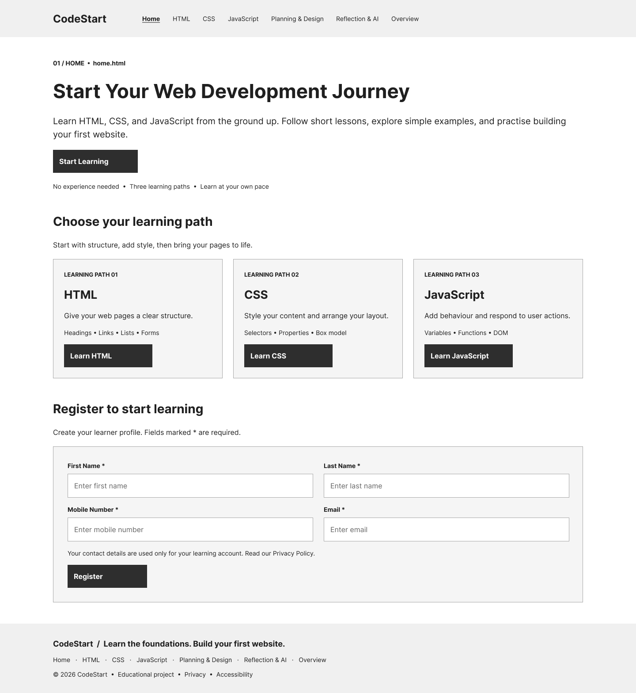

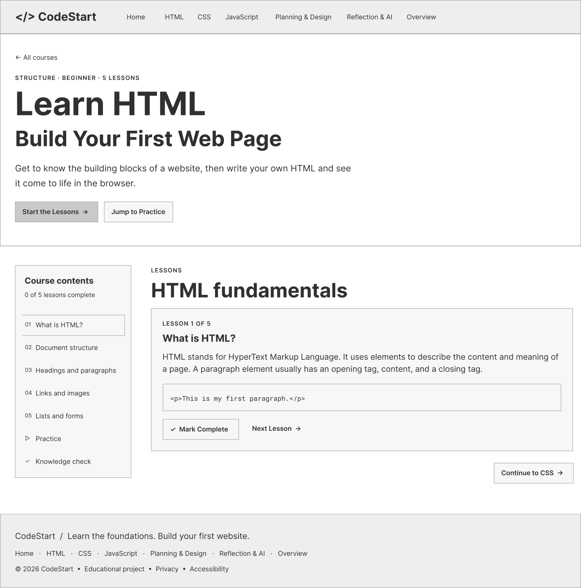

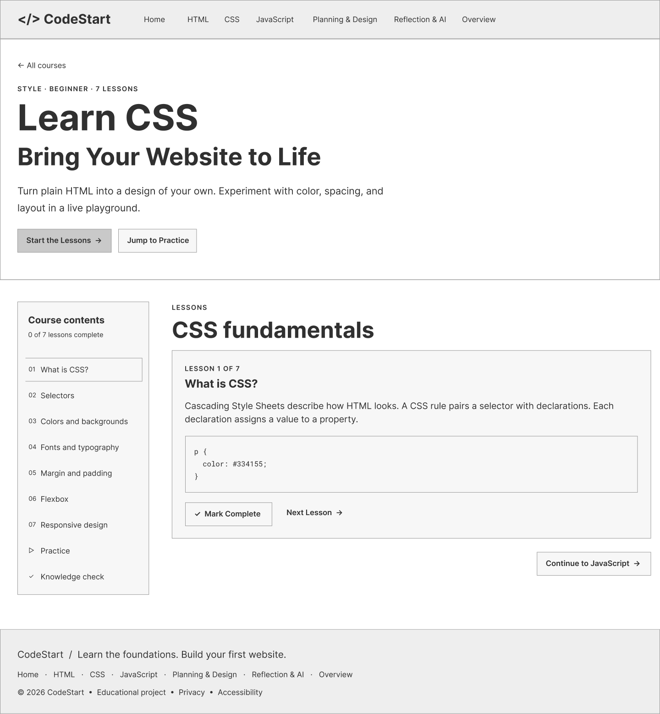

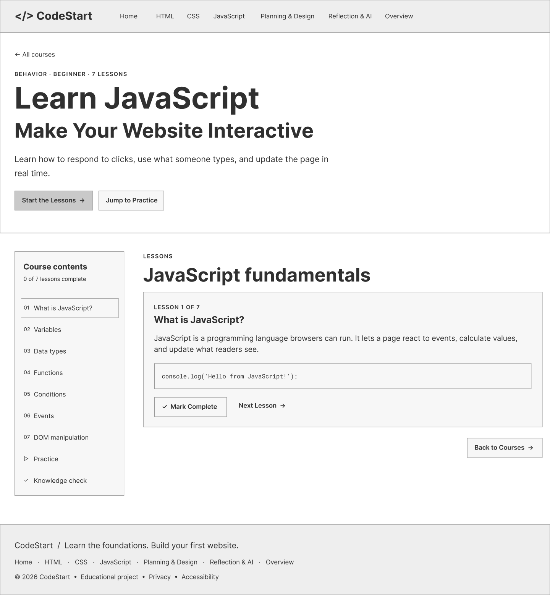

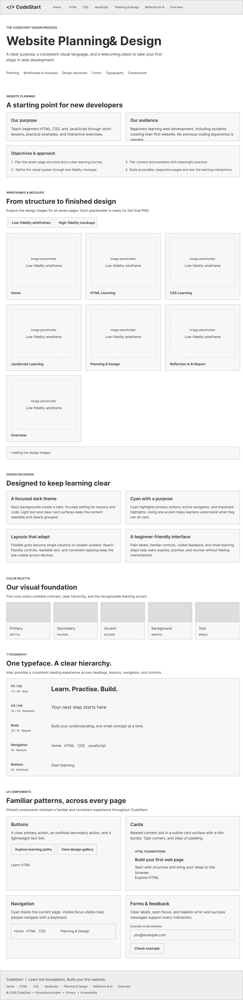

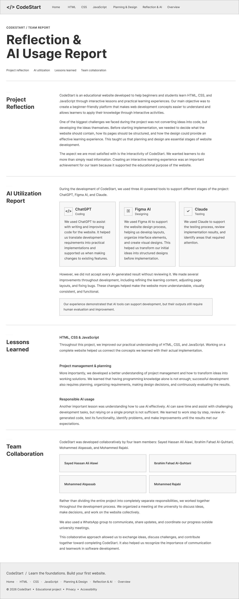

High-Fidelity Mockups
High-fidelity mockups demonstrate the intended appearance of each page, including the layout, colors, typography, navigation, and interface components.
The following seven mockups will be included:

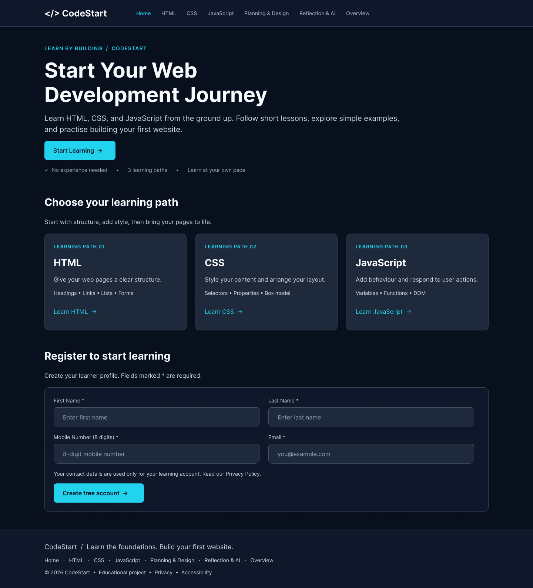

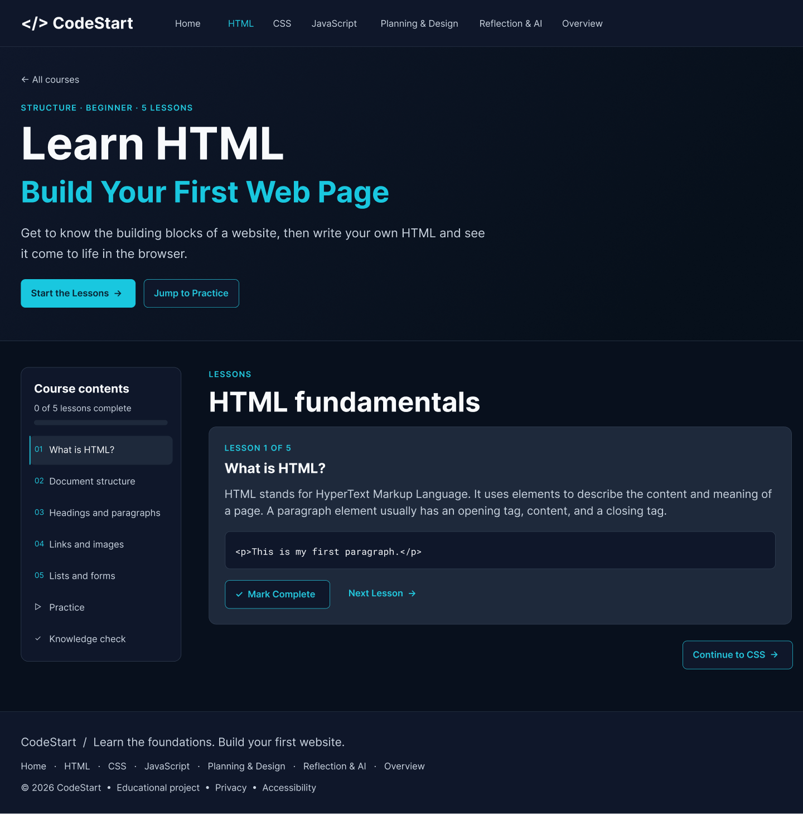

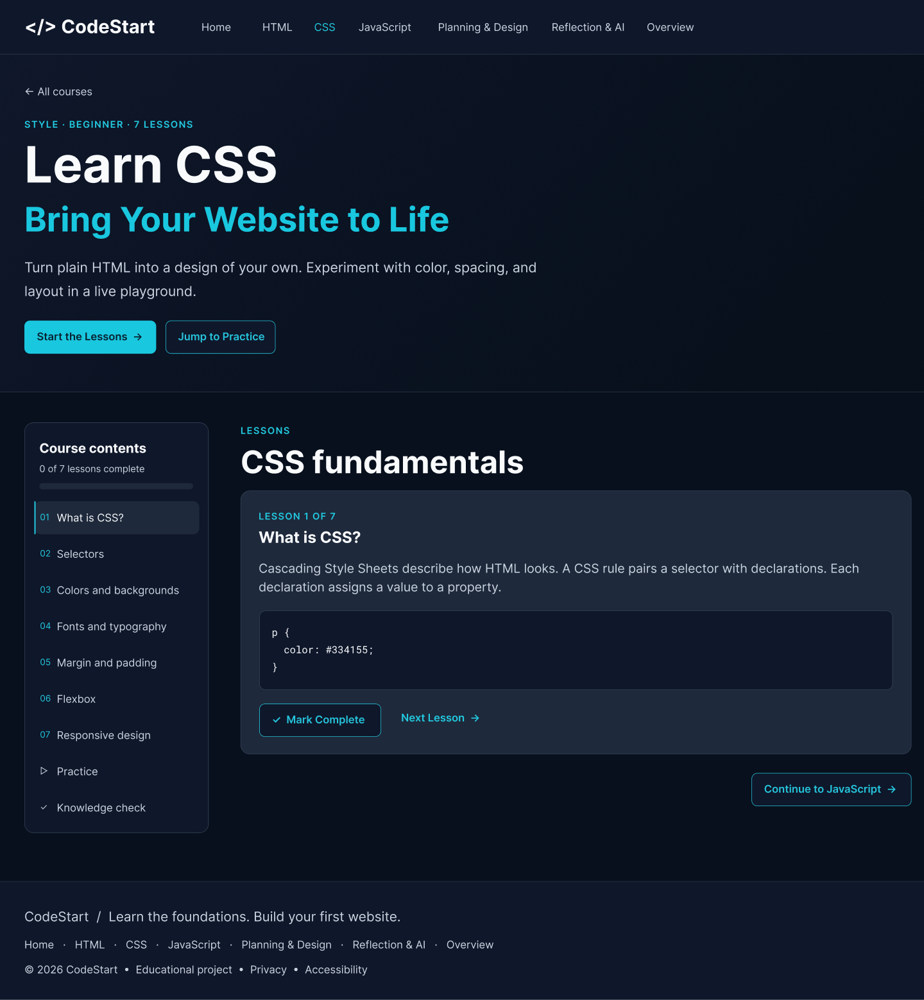

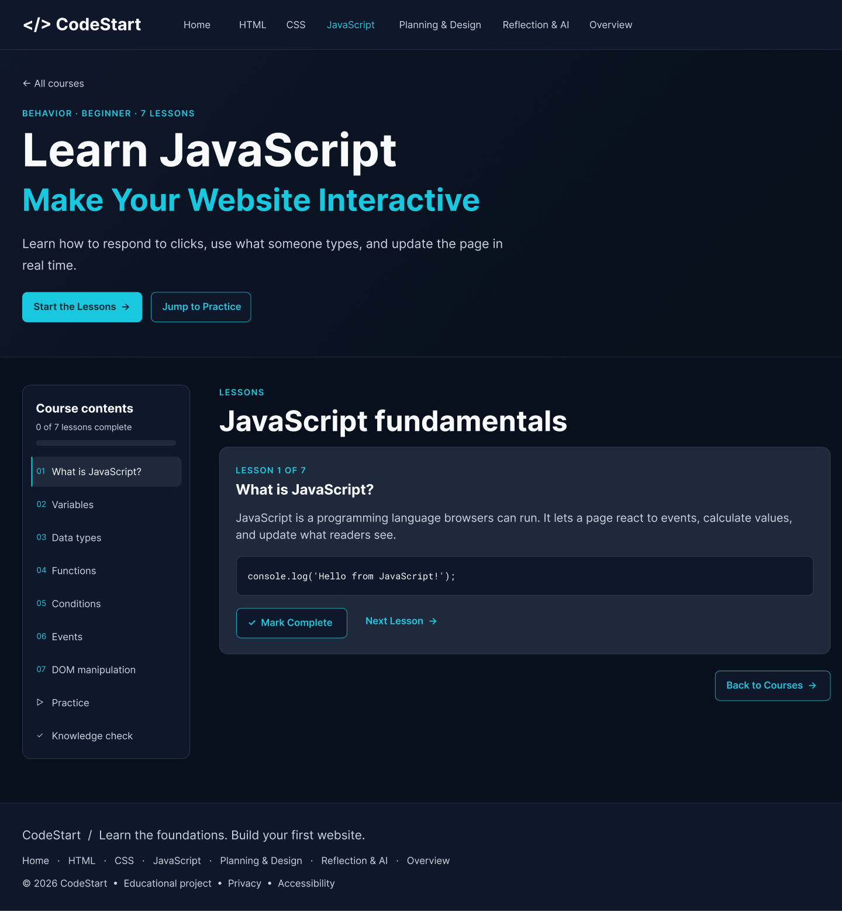

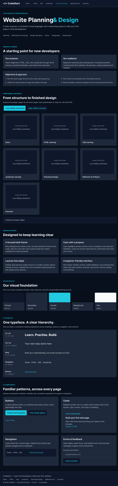

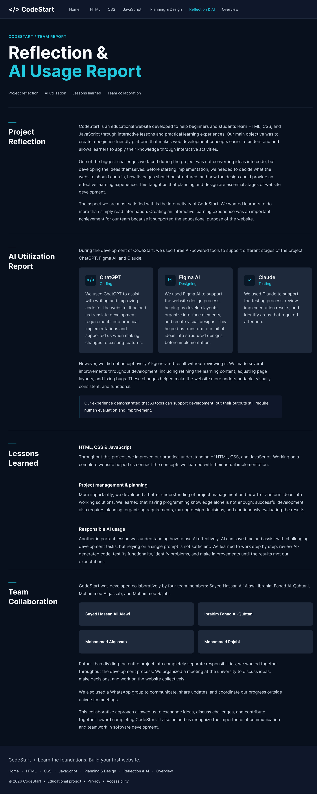

UI Style Guide
The CodeStart design system ensures consistency across all seven pages.
Color Palette
| Color | Hex Code | Usage |
|---|---|---|
| Primary | #0F172A |
Navigation bar and primary dark surfaces |
| Secondary | #1E293B |
Cards, panels, and form backgrounds |
| Accent | #22D3EE |
Buttons, highlights, and active navigation |
| Background | #080F1D |
Main website background |
| Text | #F8FAFC |
Main headings and text |
Typography
The website uses Inter for both headings and body text.
| Element | Font Weight |
|---|---|
| Main Headings (H1–H3) | 700 – Bold |
| Subheadings (H4–H6) | 600 – Semi-Bold |
| Body Text | 400 – Regular |
| Navigation | 500 – Medium |
| Buttons | 600 – Semi-Bold |
UI Components
Buttons
- Primary: Cyan background with dark text.
- Secondary: Dark background with cyan border.
- Text: Cyan text without a background.
- Border radius: 8px.
- Hover transitions: 200ms.
Cards
- Background: #1E293B.
- Border: 1px solid #334155.
- Border radius: 12px.
- Padding: 24px.
- Hover: Slight upward movement and subtle shadow.
Navigation Bar
- Background: #0F172A.
- Height: Approximately 72px.
- Active links: #22D3EE.
- Inactive links: #CBD5E1.
- Sticky positioning.
- Collapsible hamburger menu on mobile.
Forms
- Input background: #1E293B.
- Border: #475569.
- Focus border: #22D3EE.
- Text: #F8FAFC.
- Border radius: 8px.
- Error feedback: #F87171.
- Success feedback: #4ADE80.
Responsive Design Plan
CodeStart uses responsive layouts to support desktop, tablet, and mobile devices.
Desktop
- Full navigation bar with visible links.
- Lesson sidebar positioned beside the main learning content.
- Multi-column layouts where appropriate.
- Coding editor and preview displayed side by side.
Tablet
- Layout spacing and column widths adjust to the available screen space.
- Learning content remains readable and accessible.
- Navigation and interactive components adapt to narrower screens.
Mobile
- Main navigation changes to a hamburger menu.
- Lesson sidebar moves above the lesson content.
- Multi-column sections become single-column layouts.
- Coding editor and preview stack vertically.
- Typography and spacing adjust for smaller screens.
Responsive Design Evidence

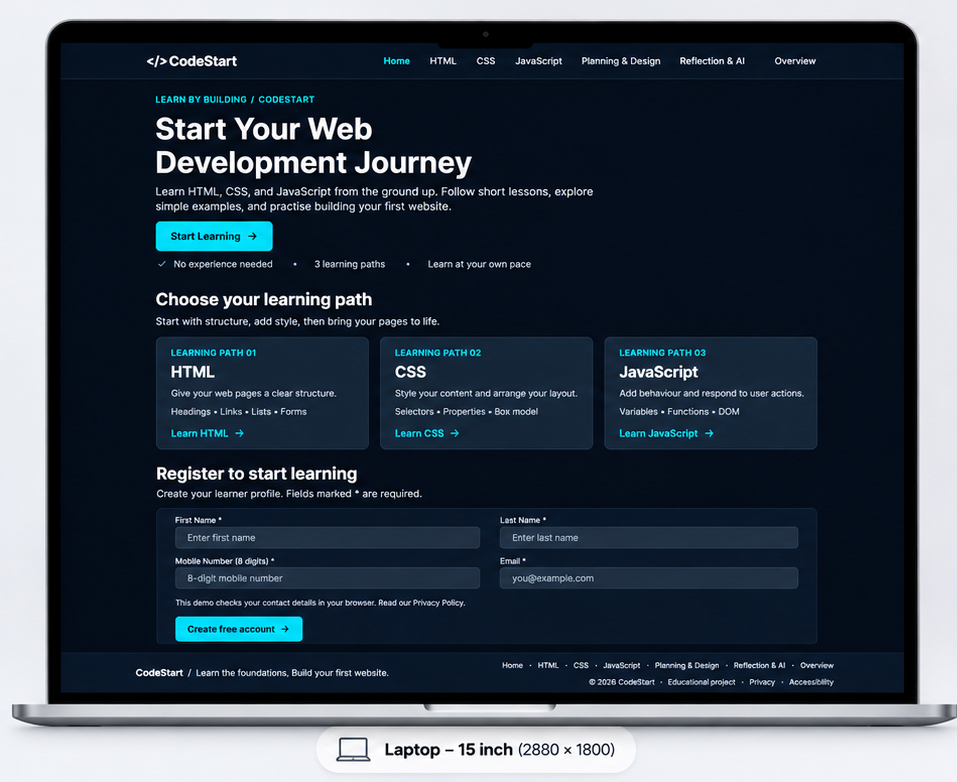

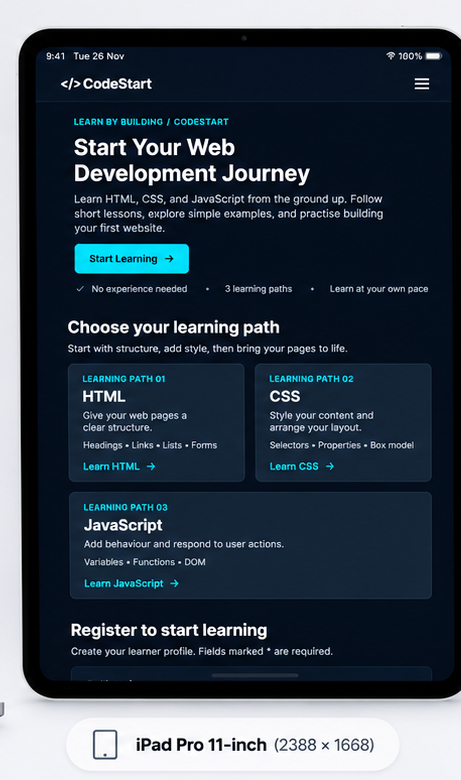

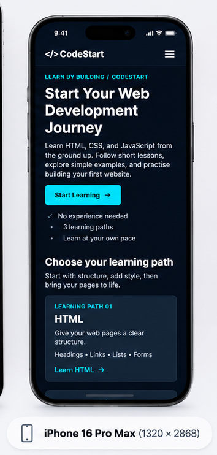
AI Utilization Plan
Three AI-powered tools were selected to support different stages of developing CodeStart.
| AI Tool | Purpose | Expected Outcome |
|---|---|---|
| ChatGPT | Coding assistance | Generate and improve website code and functionality. |
| Figma AI | Website design | Develop visual designs and support interface planning. |
| Claude | Testing assistance | Review implementation results and identify potential issues. |
Responsible AI Usage
The team used AI tools to assist with development rather than relying entirely on generated outputs.
Generated work was reviewed and improved during development. This included improving learning content, adjusting layouts, and fixing bugs.
AI-assisted development was approached as an iterative process involving generation, review, testing, and improvement.
AI-Assisted Development Documentation
The following table documents the AI tools used during development, their purposes, generated outputs, and modifications.
| AI Tool | Purpose | Prompt Used | Output Generated | Modifications Made |
|---|---|---|---|---|
| ChatGPT | Developing the Home page (home.html). |
Original development request · project attachment # Task: Implement Home Page from High-Fidelity Mockup We are developing a multi-page website for our Web Fundamentals group project. For now, **implement only the Home Page (`home.html`)**. I will attach a PNG image named **"01 Home — High fidelity"**. Use this image as the primary visual reference for the… Show less# Task: Implement Home Page from High-Fidelity Mockup
We are developing a multi-page website for our Web Fundamentals group project.
For now, **implement only the Home Page (`home.html`)**.
I will attach a PNG image named **"01 Home — High fidelity"**. Use this image as the primary visual reference for the implementation.
## 1. Design Reference
Carefully analyze the attached high-fidelity mockup before writing any code.
- Recreate the layout, visual hierarchy, spacing, alignment, proportions, and overall appearance as closely as possible.
- Match the navigation bar, hero section, cards, buttons, registration form, footer, and other elements shown in the mockup.
- Use the provided design system consistently.
- Do not unnecessarily redesign or change the mockup.
- Maintain visual consistency while adapting the layout to different screen sizes.
- If some details are unclear in the image, make reasonable decisions consistent with the design system.
## 2. Technology Requirements
Use:
- HTML5 for structure.
- CSS3 for styling.
- Vanilla JavaScript (ES6) for interactions and form validation.
Do not use React, Vue, Next.js, or other JavaScript frameworks.
Organize the code into separate files:
```text
home.html
css/
style.css
js/
main.js
images/
```
If an existing project structure is present, inspect and reuse it rather than creating unnecessary duplicate files.
Use semantic HTML, reusable CSS classes, and clean, maintainable code.
## 3. Color Palette
Use these exact colors:
| Color | Hex |
|---|---|
| Primary | #0F172A |
| Secondary | #1E293B |
| Accent | #22D3EE |
| Background | #080F1D |
| Text | #F8FAFC |
Define the colors as CSS variables to maintain consistency throughout the project.
Use the accent color strategically for buttons, active links, icons, borders, and important highlights.
## 4. Typography
Use **Inter** for all headings, navigation, buttons, and body text.
| Element | Weight |
|---|---|
| Main Headings (H1–H3) | 700 (Bold) |
| Subheadings (H4–H6) | 600 (Semi-Bold) |
| Body Text | 400 (Regular) |
| Navigation | 500 (Medium) |
| Buttons | 600 (Semi-Bold) |
Use responsive font sizes and maintain readable line heights.
## 5. Component Design System
### Buttons
**Primary Button**
- Background: #22D3EE.
- Text: Dark (#0F172A).
- Border radius: 8px.
**Secondary Button**
- Dark background.
- Cyan border (#22D3EE).
- Light or cyan text.
**Text Button**
- Cyan text.
- Transparent background.
- No border.
All buttons:
- Use a 200ms hover transition.
- Have subtle brightness or background changes on hover.
- Include visible keyboard focus states.
- Maintain consistent padding and sizing.
### Cards
- Background: #1E293B.
- Border: 1px solid #334155.
- Border radius: 12px.
- Padding: 24px.
- Hover: Slight upward movement and a subtle shadow.
- Use consistent spacing between cards.
### Navigation Bar
- Background: #0F172A.
- Height: Approximately 72px.
- Sticky at the top of the viewport.
- Active link: #22D3EE.
- Inactive links: #CBD5E1.
- Mobile: Collapsible hamburger menu.
The navigation should be functional and accessible.
The full website will eventually contain exactly seven pages:
1. Home (`home.html`)
2. Subtopic 1 (`subtopic1.html`)
3. Subtopic 2 (`subtopic2.html`)
4. Subtopic 3 (`subtopic3.html`)
5. Planning & Design (`planning-design.html`)
6. Reflection & AI Report (`reflection-ai-report.html`)
7. Overview (`overview.html`)
For now, do not implement the other pages. Only prepare the navigation links for them.
### Forms
- Input background: #1E293B.
- Input border: #475569.
- Focus border: #22D3EE.
- Text: #F8FAFC.
- Border radius: 8px.
- Error color: #F87171.
- Success color: #4ADE80.
Include appropriate labels, placeholders, spacing, and validation feedback.
## 6. Home Page Content Requirements
The Home Page must contain all the following elements required by the assignment:
### A. Navigation Menu
A responsive navigation menu linking to the seven website pages.
### B. Hero Section
An attractive hero section that clearly introduces the website.
Include a prominent heading, supporting description, and call-to-action button based on the mockup.
### C. Website Introduction
Briefly explain the purpose of the website and what visitors can expect.
### D. Project Overview
Introduce the website's main topic and highlight its key features or benefits.
### E. Call-to-Action Section
Encourage visitors to take a relevant action, following the mockup's design.
### F. Registration Form
The Home Page must include a registration form with the following fields:
- First Name
- Last Name
- Mobile Number
- Email Address
Implement these validation rules using JavaScript:
| Field | Validation |
|---|---|
| First Name | Minimum 3 characters |
| Last Name | Minimum 3 characters |
| Mobile Number | Exactly 8 digits |
| Email Address | Valid email format |
Validation behavior:
- Trim unnecessary whitespace.
- Display clear error messages near invalid fields.
- Highlight invalid fields using #F87171.
- Display success feedback using #4ADE80.
- Prevent submission if any field is invalid.
- Display an appropriate success message when all fields are valid.
- Do not pretend that information has been saved to a database; the form is frontend-only for now.
- Ensure validation works without reloading the page.
Match the form's appearance and positioning to the provided mockup as closely as possible.
## 7. Responsive Design
The Home Page must work properly on:
- Desktop
- Tablet
- Mobile
Requirements:
- Preserve the desktop mockup layout as closely as possible.
- Adapt grids and columns for smaller screens.
- Prevent horizontal overflow.
- Ensure navigation collapses properly on mobile.
- Maintain readable typography and comfortable spacing.
- Make buttons and form inputs touch-friendly.
- Ensure images scale correctly without distortion.
## 8. Animations and Interactions
Add subtle, professional interactions without changing the visual identity of the design.
Examples:
- Smooth hover transitions for buttons.
- Subtle card elevation on hover.
- Smooth navigation menu opening and closing.
- Appropriate focus states for form elements.
Avoid excessive animations, large transformations, or distracting effects.
Respect users who prefer reduced motion.
## 9. Accessibility and Code Quality
- Use semantic HTML5 elements.
- Maintain logical heading hierarchy.
- Add labels to all form inputs.
- Ensure keyboard accessibility.
- Provide alt text for meaningful images.
- Maintain sufficient text contrast.
- Use reusable CSS classes.
- Avoid unnecessary dependencies.
- Do not use inline CSS or inline JavaScript.
- Keep the code readable and organized.
## 10. Scope Restrictions
**Important:**
- Implement the Home Page only.
- Do not create the other six pages yet.
- Do not add sections that are unrelated to the provided mockup or assignment requirements.
- Do not replace the provided design with a generic template.
- Do not introduce unnecessary libraries or frameworks.
- Do not implement a backend or database.
- Do not add features beyond the requirements unless necessary for functionality or responsiveness.
If the mockup does not visibly include a mandatory assignment section, incorporate it in the most visually consistent way possible.
## 11. Final Verification
After implementation:
1. Check that the Home Page closely matches the attached PNG.
2. Verify the colors, fonts, spacing, and component styles.
3. Test the responsive layout.
4. Test navigation behavior.
5. Test all registration form validation cases.
6. Check for JavaScript errors and broken assets.
7. Ensure the page works when opening `home.html` locally.
Once completed, provide a short summary of the files created or modified, the functionality implemented, and any differences from the reference mockup.
**Priority: Visual accuracy to the high-fidelity mockup, followed by functionality, responsiveness, accessibility, and clean code.** |
Home page with responsive navigation, learning-path cards, and registration validation. | Added a personalized welcome banner using sessionStorage; corrected dismissal so each successful registration displays the new first name. |
| ChatGPT | Developing the HTML Learning page (subtopic1.html). |
Original development request · project attachment # Task: Implement Subtopic 1 – HTML Learning Page We are developing a seven-page educational website for our Web Fundamentals group project. The Home Page (`home.html`) has already been implemented. **Your task is to implement only Subtopic 1 – HTML Learning (`subtopic1.html`).** I will attach a PNG image named **"02… Show less# Task: Implement Subtopic 1 – HTML Learning Page
We are developing a seven-page educational website for our Web Fundamentals group project.
The Home Page (`home.html`) has already been implemented.
**Your task is to implement only Subtopic 1 – HTML Learning (`subtopic1.html`).**
I will attach a PNG image named **"02 HTML — High fidelity"**. Use this image as the primary reference for the page design.
## 1. Design Reference
Carefully analyze the attached high-fidelity mockup before writing code.
- Recreate the layout, spacing, alignment, typography, colors, and visual hierarchy as closely as possible.
- Match all visible sections, cards, buttons, icons, learning content, and other UI elements.
- Preserve the layout and proportions shown in the mockup.
- Do not redesign the page or replace it with a generic educational template.
- Use the exact content visible in the mockup where readable.
- Adapt the design for desktop, tablet, and mobile screens.
- If any details are unclear, make reasonable decisions that match the existing design system.
**Important:** The existing Home Page and its shared components should be reused for visual consistency.
## 2. Technology Requirements
Use only:
- HTML5
- CSS3
- Vanilla JavaScript (ES6)
Do not use React, Vue, Next.js, or other JavaScript frameworks.
Use the existing project structure:
```text
home.html
subtopic1.html
css/
style.css
js/
main.js
images/
```
If additional CSS or JavaScript files are needed, organize them appropriately.
Before implementation:
1. Inspect the existing project files.
2. Identify reusable components and styles.
3. Reuse the existing navigation bar, footer, typography, buttons, and design tokens.
4. Avoid duplicating CSS or JavaScript unnecessarily.
5. Do not break the existing Home Page.
## 3. Color Palette
Use these exact colors:
| Color | Hex |
|---|---|
| Primary | #0F172A |
| Secondary | #1E293B |
| Accent | #22D3EE |
| Background | #080F1D |
| Text | #F8FAFC |
Use CSS variables to keep the colors consistent.
The overall appearance should be a professional, modern dark-themed educational website.
## 4. Typography
Use **Inter** for all text.
| Element | Font Weight |
|---|---|
| Main Headings (H1–H3) | 700 – Bold |
| Subheadings (H4–H6) | 600 – Semi-Bold |
| Body Text | 400 – Regular |
| Navigation | 500 – Medium |
| Buttons | 600 – Semi-Bold |
Maintain consistent font sizing, line heights, and spacing across all sections.
## 5. Component Design System
### Buttons
**Primary Button**
- Background: #22D3EE
- Text: #0F172A
- Border radius: 8px
**Secondary Button**
- Dark background
- Cyan border: #22D3EE
- Light or cyan text
**Text Button**
- Cyan text
- No background
- No border
All buttons must:
- Have a 200ms transition.
- Include subtle hover effects.
- Display visible keyboard focus states.
- Maintain consistent padding and sizing.
### Cards
- Background: #1E293B
- Border: 1px solid #334155
- Border radius: 12px
- Padding: 24px
- Hover: Slight upward movement and subtle shadow.
Keep cards visually consistent with the Home Page.
### Navigation Bar
- Background: #0F172A
- Height: Approximately 72px
- Position: Sticky at the top
- Active link: #22D3EE
- Inactive links: #CBD5E1
- Mobile: Collapsible hamburger menu
The navigation should include the same seven page links as the Home Page.
Highlight **HTML Learning** as the active page.
Reuse the existing navigation implementation rather than building a different one.
### Forms and Inputs
If the reference mockup includes forms, exercises, or interactive inputs, use:
- Background: #1E293B
- Border: #475569
- Focus border: #22D3EE
- Text: #F8FAFC
- Border radius: 8px
- Error color: #F87171
- Success color: #4ADE80
Provide clear feedback for validation and user interactions.
## 6. HTML Learning Content
The purpose of this page is to teach beginners the fundamentals of HTML.
Follow the attached high-fidelity mockup for the exact sections, content order, and presentation.
Where the mockup contains HTML learning content, ensure that explanations and examples are technically accurate and beginner-friendly.
Potential topics include:
- Introduction to HTML
- Basic HTML document structure
- HTML elements and tags
- Headings and paragraphs
- Links and images
- Lists
- Basic HTML forms
- Semantic HTML
**Do not automatically add all these topics.** Only implement content shown in the reference mockup or needed to complete its existing sections.
### Code Examples
If the mockup contains HTML code examples:
- Display code in clearly styled code blocks.
- Preserve indentation.
- Use readable monospace typography.
- Escape HTML characters so code appears as text rather than being interpreted by the browser.
- Make code blocks responsive.
- Implement copy-code buttons if shown in the mockup.
### Interactive Learning Elements
If the mockup includes interactive elements such as tabs, lessons, quizzes, exercises, or expandable sections:
- Implement them using Vanilla JavaScript.
- Ensure buttons and controls perform their intended actions.
- Provide visual feedback.
- Keep interactions simple and beginner-friendly.
- Do not create decorative buttons that do nothing.
If there is a code editor or live HTML preview in the mockup, make it functional using a safely sandboxed iframe, without executing user-entered HTML or JavaScript in the main website context.
## 7. Responsive Design
Implement responsive layouts for:
**Desktop**
- Match the high-fidelity mockup as closely as possible.
**Tablet**
- Adjust section widths, spacing, and grid columns as needed.
**Mobile**
- Stack content vertically where appropriate.
- Use a collapsible navigation menu.
- Prevent horizontal scrolling.
- Keep code blocks scrollable within their containers.
- Make interactive controls touch-friendly.
- Maintain readable text and sufficient spacing.
Use CSS media queries and flexible layouts.
## 8. Animations and Interactions
Use subtle, modern interactions that match the Home Page.
Examples:
- Smooth button hover transitions.
- Slight card elevation on hover.
- Smooth collapsible navigation.
- Subtle active states for interactive learning components.
Avoid excessive animations or effects that distract from the educational content.
Respect `prefers-reduced-motion`.
## 9. Accessibility and Code Quality
- Use semantic HTML5 elements.
- Maintain a logical heading hierarchy.
- Use descriptive navigation links.
- Provide alt text for meaningful images.
- Ensure keyboard-accessible interactions.
- Maintain sufficient color contrast.
- Use accessible labels for inputs.
- Keep CSS reusable and organized.
- Avoid unnecessary dependencies.
- Avoid inline JavaScript and CSS.
- Keep the code easy to understand and maintain.
## 10. Scope Restrictions
Important:
- Implement only `subtopic1.html`.
- Do not create or redesign the remaining pages.
- Do not modify the Home Page unless a small shared fix is necessary.
- Do not change the established design system.
- Do not replace the mockup layout with your own design.
- Do not introduce frameworks.
- Do not add unrelated sections or functionality.
- Do not implement backend functionality.
Keep shared styles and JavaScript compatible with existing pages.
## 11. Final Verification
After implementation:
1. Compare the implemented page against the attached PNG.
2. Verify the layout, typography, colors, spacing, and alignment.
3. Confirm that the navigation matches the Home Page.
4. Test all buttons and interactive learning elements.
5. Verify that HTML code examples render correctly.
6. Test desktop, tablet, and mobile layouts.
7. Check for JavaScript errors and broken assets.
8. Ensure `subtopic1.html` works locally and links correctly to `home.html`.
9. Confirm that the Home Page has not been broken by shared CSS or JavaScript changes.
When finished, provide a short summary explaining:
- Files created or modified.
- Sections implemented.
- Interactive features added.
- Any differences from the reference mockup.
**Final Priority Order:**
1. Visual accuracy to "02 HTML — High fidelity".
2. Consistency with the existing Home Page.
3. Functional HTML learning interactions.
4. Responsive design.
5. Accessibility and maintainable code. |
HTML Learning page implementation, including page structure, styling, and interactive functionality. | Improved learning content, adjusted layouts, and fixed bugs. |
| ChatGPT | Developing the CSS Learning page (subtopic2.html). |
Original development request · project attachment # Task: Implement Subtopic 2 – CSS Learning Page We are developing a seven-page educational website for our Web Fundamentals group project. The following pages have already been implemented: - Home Page (`home.html`) - HTML Learning (`subtopic1.html`) **Your task is to implement only Subtopic 2 – CSS Learning (`subtopic2.html`).** I… Show less# Task: Implement Subtopic 2 – CSS Learning Page
We are developing a seven-page educational website for our Web Fundamentals group project.
The following pages have already been implemented:
- Home Page (`home.html`)
- HTML Learning (`subtopic1.html`)
**Your task is to implement only Subtopic 2 – CSS Learning (`subtopic2.html`).**
I will attach a PNG image named **"03 CSS — High fidelity"**. Use this image as the primary visual reference.
## 1. Design Reference
Carefully analyze the attached high-fidelity mockup before writing any code.
- Recreate the layout, spacing, alignment, proportions, typography, colors, and visual hierarchy as closely as possible.
- Match all visible sections, cards, buttons, icons, learning content, and interactive elements.
- Preserve the exact design and section ordering shown in the mockup.
- Use the content shown in the mockup wherever it is readable.
- Do not redesign the page or replace it with a generic educational template.
- Make the page visually consistent with the existing Home and HTML Learning pages.
- Adapt the design for desktop, tablet, and mobile devices.
**Important:** Prioritize visual accuracy to the attached mockup while maintaining consistency with existing shared components.
## 2. Technology Requirements
Use only:
- HTML5
- CSS3
- Vanilla JavaScript (ES6)
Do not use React, Vue, Next.js, or other JavaScript frameworks.
Use the existing project structure:
```text
home.html
subtopic1.html
subtopic2.html
css/
style.css
js/
main.js
images/
```
Before implementation:
1. Inspect the existing project files and structure.
2. Identify reusable CSS classes, components, and JavaScript functionality.
3. Reuse the existing navigation bar, footer, buttons, cards, and design tokens.
4. Avoid duplicating existing code.
5. Ensure existing pages continue functioning correctly.
If page-specific styling or JavaScript is necessary, organize it into appropriate files without affecting other pages.
## 3. Color Palette
Use these exact colors:
| Color | Hex |
|---|---|
| Primary | #0F172A |
| Secondary | #1E293B |
| Accent | #22D3EE |
| Background | #080F1D |
| Text | #F8FAFC |
Reuse existing CSS variables wherever possible.
Use cyan for important highlights, active navigation links, buttons, and interactive elements.
Maintain the established professional dark-themed appearance.
## 4. Typography
Use **Inter** throughout the page.
| Element | Font Weight |
|---|---|
| Main Headings (H1–H3) | 700 – Bold |
| Subheadings (H4–H6) | 600 – Semi-Bold |
| Body Text | 400 – Regular |
| Navigation | 500 – Medium |
| Buttons | 600 – Semi-Bold |
Ensure consistent heading sizes, line heights, spacing, and text hierarchy with existing pages.
## 5. Component Design System
### Buttons
**Primary Button**
- Background: #22D3EE
- Text: #0F172A
- Border radius: 8px
**Secondary Button**
- Dark background
- Cyan border: #22D3EE
- Light or cyan text
**Text Button**
- Cyan text
- Transparent background
- No border
All buttons must:
- Use 200ms hover transitions.
- Have subtle brightness or background changes.
- Include accessible keyboard focus states.
- Maintain consistent padding and sizing.
### Cards
- Background: #1E293B
- Border: 1px solid #334155
- Border radius: 12px
- Padding: 24px
- Hover: Slight upward movement and subtle shadow.
Reuse existing card styles wherever possible.
### Navigation Bar
- Background: #0F172A
- Height: Approximately 72px
- Position: Sticky at the top
- Active link: #22D3EE
- Inactive links: #CBD5E1
- Mobile: Collapsible hamburger menu
Reuse the same navigation implementation used on the Home and HTML Learning pages.
Highlight **CSS Learning** as the active page.
Ensure that navigation links to existing pages work correctly.
### Forms and Inputs
If the mockup includes forms, interactive exercises, or inputs, use:
- Background: #1E293B
- Border: #475569
- Focus border: #22D3EE
- Text: #F8FAFC
- Border radius: 8px
- Error color: #F87171
- Success color: #4ADE80
Provide clear validation and interaction feedback where appropriate.
## 6. CSS Learning Content
The purpose of this page is to introduce beginners to CSS and explain how it is used to style websites.
Follow the attached high-fidelity mockup for the exact content, sections, and presentation.
Where CSS learning content appears, make sure it is technically accurate, clear, and beginner-friendly.
Potential learning topics include:
- Introduction to CSS
- CSS syntax
- CSS selectors
- Colors and backgrounds
- Fonts and typography
- The CSS box model
- Margin, padding, and borders
- Flexbox and Grid
- Responsive design
- CSS transitions and hover effects
**Do not automatically add all these topics.** Only implement the topics shown in the mockup or necessary to complete its existing sections.
### CSS Code Examples
If the mockup contains CSS code examples:
- Display code inside properly styled code blocks.
- Preserve indentation and formatting.
- Use readable monospace fonts.
- Apply syntax highlighting if consistent with the design.
- Make code blocks responsive.
- Implement copy-code functionality if shown in the mockup.
Example:
```css
.card {
background-color: #1E293B;
padding: 24px;
border-radius: 12px;
}
```
### Interactive CSS Examples
If the mockup includes interactive CSS demonstrations, implement them using Vanilla JavaScript and CSS.
Examples might include:
- Changing text colors.
- Adjusting padding or margin.
- Modifying border radius.
- Demonstrating Flexbox alignment.
- Switching between CSS styles.
- Displaying live CSS previews.
Any interactive examples must be functional rather than decorative.
If the mockup includes a CSS editor, implement a functional editor and preview using an isolated, sandboxed iframe. Do not inject user-entered CSS into the website's main document.
## 7. Responsive Design
The CSS Learning page must be responsive across:
**Desktop**
- Reproduce the high-fidelity mockup as closely as possible.
**Tablet**
- Adjust grids, spacing, and section widths appropriately.
**Mobile**
- Stack columns vertically where necessary.
- Use the existing collapsible navigation.
- Prevent horizontal overflow.
- Keep code blocks horizontally scrollable within their containers.
- Ensure buttons and inputs are touch-friendly.
- Maintain readable typography.
Use flexible layouts and CSS media queries.
## 8. Animations and Interactions
Use the same animation style established by the existing pages.
Examples:
- Smooth button hover transitions.
- Slight card elevation on hover.
- Smooth mobile navigation transitions.
- Subtle visual feedback for interactive exercises.
- Appropriate active and focus states.
Avoid excessive animations or effects that distract users from learning.
Respect `prefers-reduced-motion`.
## 9. Accessibility and Code Quality
- Use semantic HTML5 elements.
- Maintain a logical heading hierarchy.
- Ensure keyboard accessibility.
- Provide descriptive labels for interactive controls.
- Include alt text for meaningful images.
- Maintain sufficient color contrast.
- Keep CSS reusable and organized.
- Avoid unnecessary dependencies.
- Do not use inline CSS or JavaScript for the site's own interface.
- Keep the code clean, readable, and maintainable.
## 10. Scope Restrictions
**Important:**
- Implement only `subtopic2.html`.
- Do not create or redesign the other pages.
- Do not modify the Home Page or HTML Learning page unless a small shared fix is necessary.
- Do not change the established design system.
- Do not replace the high-fidelity mockup with a generic template.
- Do not introduce new frameworks.
- Do not implement a backend or database.
- Do not add unrelated sections or functionality.
Any shared CSS or JavaScript changes must remain compatible with all existing pages.
## 11. Final Verification
After implementation:
1. Compare the implemented page with **"03 CSS — High fidelity"**.
2. Verify layout, spacing, typography, colors, and alignment.
3. Ensure the navigation and footer match existing pages.
4. Test every button and interactive learning feature.
5. Verify CSS code examples render correctly.
6. Test desktop, tablet, and mobile layouts.
7. Check for JavaScript errors and broken assets.
8. Ensure `subtopic2.html` works locally.
9. Verify navigation between Home, HTML Learning, and CSS Learning.
10. Confirm existing pages remain unaffected.
After completion, provide a short summary of:
- Files created or modified.
- Sections implemented.
- Interactive features added.
- Any differences from the reference mockup.
**Final Priority Order:**
1. Visual accuracy to "03 CSS — High fidelity".
2. Consistency with existing Home and HTML Learning pages.
3. Functional CSS learning interactions.
4. Responsive design.
5. Accessibility and maintainable code. |
CSS Learning page implementation, including styling, learning content, and interactive demonstrations. | Improved layouts and fixed bugs. |
| ChatGPT | Developing the JavaScript Learning page (subtopic3.html). |
Original development request · project attachment # Task: Implement Subtopic 3 – JavaScript Learning Page We are developing a seven-page educational website for our Web Fundamentals group project. The following pages have already been implemented: - Home Page (`home.html`) - HTML Learning (`subtopic1.html`) - CSS Learning (`subtopic2.html`) **Your task is to implement only Subtopic 3 –… Show less# Task: Implement Subtopic 3 – JavaScript Learning Page
We are developing a seven-page educational website for our Web Fundamentals group project.
The following pages have already been implemented:
- Home Page (`home.html`)
- HTML Learning (`subtopic1.html`)
- CSS Learning (`subtopic2.html`)
**Your task is to implement only Subtopic 3 – JavaScript Learning (`subtopic3.html`).**
I will attach a PNG image named **"04 JavaScript — High fidelity"**. Use this image as the primary visual reference for the implementation.
## 1. Design Reference
Carefully analyze the attached high-fidelity mockup before writing any code.
- Recreate the layout, spacing, alignment, proportions, typography, colors, and visual hierarchy as closely as possible.
- Match all visible sections, cards, buttons, icons, code examples, learning content, and interactive elements.
- Preserve the layout and section order shown in the mockup.
- Use the exact content visible in the mockup wherever readable.
- Do not redesign the page or replace it with a generic educational template.
- Maintain visual consistency with the existing Home, HTML Learning, and CSS Learning pages.
- Adapt the design for desktop, tablet, and mobile devices.
**Important:** Prioritize visual accuracy to the attached mockup while reusing the established website design system.
## 2. Technology Requirements
Use only:
- HTML5
- CSS3
- Vanilla JavaScript (ES6)
Do not use React, Vue, Next.js, or other JavaScript frameworks.
Use the existing project structure:
```text
home.html
subtopic1.html
subtopic2.html
subtopic3.html
css/
style.css
js/
main.js
images/
```
Before implementation:
1. Inspect the existing project files.
2. Identify reusable CSS classes, components, and JavaScript functionality.
3. Reuse the existing navigation bar, footer, buttons, cards, and design tokens.
4. Avoid duplicating existing code.
5. Ensure all previously implemented pages continue functioning correctly.
If page-specific CSS or JavaScript is required, organize it into separate files where appropriate.
## 3. Color Palette
Use these exact colors:
| Color | Hex |
|---|---|
| Primary | #0F172A |
| Secondary | #1E293B |
| Accent | #22D3EE |
| Background | #080F1D |
| Text | #F8FAFC |
Reuse the existing CSS variables.
Use cyan for important highlights, active navigation links, buttons, and interactive elements.
Maintain the established modern dark-themed educational design.
## 4. Typography
Use **Inter** throughout the page.
| Element | Font Weight |
|---|---|
| Main Headings (H1–H3) | 700 – Bold |
| Subheadings (H4–H6) | 600 – Semi-Bold |
| Body Text | 400 – Regular |
| Navigation | 500 – Medium |
| Buttons | 600 – Semi-Bold |
Maintain consistent heading sizes, line heights, text hierarchy, and spacing across all pages.
## 5. Component Design System
### Buttons
**Primary Button**
- Background: #22D3EE
- Text: #0F172A
- Border radius: 8px
**Secondary Button**
- Dark background
- Cyan border: #22D3EE
- Light or cyan text
**Text Button**
- Cyan text
- Transparent background
- No border
All buttons must:
- Use 200ms hover transitions.
- Have subtle brightness or background changes.
- Include accessible keyboard focus states.
- Maintain consistent padding and sizing.
### Cards
- Background: #1E293B
- Border: 1px solid #334155
- Border radius: 12px
- Padding: 24px
- Hover: Slight upward movement and subtle shadow.
Reuse existing card styles wherever possible.
### Navigation Bar
- Background: #0F172A
- Height: Approximately 72px
- Position: Sticky at the top
- Active link: #22D3EE
- Inactive links: #CBD5E1
- Mobile: Collapsible hamburger menu
Reuse the navigation implementation from the existing pages.
Highlight **JavaScript Learning** as the active page.
Ensure all existing navigation links work correctly.
### Forms and Inputs
If the mockup includes forms, exercises, or interactive inputs, use:
- Background: #1E293B
- Border: #475569
- Focus border: #22D3EE
- Text: #F8FAFC
- Border radius: 8px
- Error color: #F87171
- Success color: #4ADE80
Provide clear validation and interaction feedback wherever appropriate.
## 6. JavaScript Learning Content
The purpose of this page is to introduce beginners to JavaScript and demonstrate how it adds interactivity to websites.
Follow the attached high-fidelity mockup for the exact sections, content, and presentation.
Ensure all JavaScript explanations and examples are technically accurate and beginner-friendly.
Potential learning topics include:
- Introduction to JavaScript
- JavaScript variables (`let`, `const`)
- Data types
- Operators
- Conditional statements (`if`, `else if`, `else`)
- Loops (`for`, `while`)
- Functions
- Events (`onclick`, `onchange`)
- DOM manipulation
- Basic JavaScript interactivity
**Do not automatically add all these topics.** Only implement topics shown in the mockup or necessary to complete its existing sections.
### JavaScript Code Examples
If the mockup contains JavaScript code examples:
- Display code inside properly styled code blocks.
- Preserve indentation and formatting.
- Use readable monospace fonts.
- Apply syntax highlighting if consistent with the design.
- Make code blocks responsive.
- Implement copy-code functionality if shown in the mockup.
Example:
```javascript
function greetUser(name) {
return "Hello, " + name + "!";
}
console.log(greetUser("Student"));
```
### Interactive JavaScript Examples
If the mockup includes interactive JavaScript demonstrations, implement them using Vanilla JavaScript.
Examples might include:
- Buttons that update text content.
- Input fields that display personalized messages.
- A simple counter.
- Changing an element's appearance.
- Conditional statement demonstrations.
- Interactive quizzes.
- Live JavaScript code examples.
Only implement interactions that appear in the mockup or are necessary to make the existing design functional.
All interactive elements must work correctly rather than serving as decorative placeholders.
### JavaScript Code Editor
If the mockup includes a JavaScript code editor or live playground:
- Allow users to edit code.
- Provide a Run button if shown in the design.
- Display output clearly.
- Support basic examples involving `console.log()`.
- Run user-entered code only inside an appropriately sandboxed iframe with an isolated execution context.
- Never execute user-entered JavaScript using `eval()` or `new Function()` in the main website context.
- Do not expose the main page's DOM, cookies, or application state to user code.
- Show useful error messages if submitted code contains syntax or runtime errors.
Ensure the editor and output area remain responsive on smaller screens.
## 7. Responsive Design
The JavaScript Learning page must work properly on:
**Desktop**
- Match the high-fidelity mockup as closely as possible.
**Tablet**
- Adjust grid layouts, section widths, and spacing appropriately.
**Mobile**
- Stack columns vertically where necessary.
- Use the existing collapsible navigation.
- Prevent horizontal overflow.
- Keep code blocks horizontally scrollable within their containers.
- Ensure buttons and form inputs are touch-friendly.
- Maintain readable typography.
Use flexible layouts and CSS media queries.
## 8. Animations and Interactions
Use subtle animations consistent with the existing website.
Examples:
- Smooth button hover transitions.
- Slight card elevation on hover.
- Smooth mobile navigation transitions.
- Visual feedback for interactive exercises.
- Appropriate active and focus states.
Avoid excessive or distracting animations.
Respect `prefers-reduced-motion`.
## 9. Accessibility and Code Quality
- Use semantic HTML5 elements.
- Maintain a logical heading hierarchy.
- Ensure keyboard accessibility.
- Provide descriptive labels for interactive controls.
- Include alt text for meaningful images.
- Maintain sufficient color contrast.
- Use accessible feedback messages for exercises and validation.
- Keep CSS reusable and organized.
- Avoid unnecessary dependencies.
- Do not use inline CSS or JavaScript for the website's own interface.
- Keep the code clean, readable, and maintainable.
## 10. Scope Restrictions
**Important:**
- Implement only `subtopic3.html`.
- Do not create or redesign the other pages.
- Do not modify Home, HTML Learning, or CSS Learning unless a small shared fix is necessary.
- Do not change the established design system.
- Do not replace the attached mockup with a generic template.
- Do not introduce new frameworks.
- Do not implement backend functionality or a database.
- Do not add unrelated sections or features.
Any shared CSS or JavaScript changes must remain compatible with existing pages.
## 11. Final Verification
After implementation:
1. Compare the implemented page with **"04 JavaScript — High fidelity"**.
2. Verify the layout, spacing, typography, colors, and alignment.
3. Ensure the navigation and footer match existing pages.
4. Test all buttons and interactive learning features.
5. Verify JavaScript code examples render correctly.
6. Test any interactive code editor or playground.
7. Test desktop, tablet, and mobile layouts.
8. Check for JavaScript errors and broken assets.
9. Ensure `subtopic3.html` works locally.
10. Verify navigation between Home, HTML Learning, CSS Learning, and JavaScript Learning.
11. Confirm existing pages remain unaffected.
After completion, provide a short summary of:
- Files created or modified.
- Sections implemented.
- Interactive features added.
- Any differences from the reference mockup.
**Final Priority Order:**
1. Visual accuracy to "04 JavaScript — High fidelity".
2. Consistency with the existing Home, HTML, and CSS pages.
3. Functional JavaScript learning interactions.
4. Responsive design.
5. Accessibility and maintainable code. |
JavaScript Learning page implementation, including learning content, interactive features, and coding exercises. | Improved learning content and fixed bugs. |
| ChatGPT | Developing the Planning & Design page (planning-design.html). |
Original development request · conversation record # Task: Create Planning & Design Page Create **Page 5 – Website Planning & Design (`planning-design.html`)** for our CodeStart educational website. Follow the existing website's design system and reuse its navigation bar, footer, and shared CSS components. ## 1. Page Content Include the following sections: **1. Website Planning** - Website… Show less# Task: Create Planning & Design Page
Create **Page 5 – Website Planning & Design (`planning-design.html`)** for our CodeStart educational website.
Follow the existing website's design system and reuse its navigation bar, footer, and shared CSS components.
## 1. Page Content
Include the following sections:
**1. Website Planning**
- Website purpose: Teach beginners HTML, CSS, and JavaScript.
- Target audience: Beginners learning web development.
- Project objectives and planning approach.
**2. Wireframes & Mockups**
- Create a clean, interactive gallery for all seven pages.
- Each page should have two views: Low-Fidelity Wireframe and High-Fidelity Mockup.
- **Use image placeholders for now.** I will add the actual 14 images later.
- Clearly label each placeholder with its page name and design type.
- Make it easy to replace placeholders with actual PNG files.
- Include tabs or buttons to switch between low- and high-fidelity designs.
**3. Design Decisions**
- Explain our choices of dark theme, cyan accents, responsive layouts, and beginner-friendly interface.
**4. Color Palette**
| Color | Hex |
| ---------- | ------- |
| Primary | #0F172A |
| Secondary | #1E293B |
| Accent | #22D3EE |
| Background | #080F1D |
| Text | #F8FAFC |
Display the colors as visual swatches with their names and hex codes.
**5. Typography**
- Font: Inter
- H1–H3: 700
- H4–H6: 600
- Body: 400
- Navigation: 500
- Buttons: 600
Include a visual typography showcase.
**6. UI Components**\
Display examples of our existing buttons, cards, navigation, and form styles.
## 2. Design Requirements
Maintain our existing design system:
- Dark background: #080F1D.
- Cyan accent: #22D3EE.
- Cards: #1E293B, 1px solid #334155, 12px radius, 24px padding.
- Buttons: 8px radius, 200ms hover transitions.
- Sticky navigation: #0F172A, approximately 72px.
- Forms: #1E293B background, #475569 border, cyan focus, #F87171 errors, #4ADE80 success.
- Use Inter throughout.
Make the page modern, professional, visually organized, and fully responsive.
## 3. Technical Requirements
- Use HTML5, CSS3, and Vanilla JavaScript.
- Reuse existing CSS and JavaScript where possible.
- Make the wireframe/mockup gallery interactive.
- Ensure placeholders remain visually appealing until images are added.
- Do not generate fake wireframes or mockups.
- Do not modify existing pages unnecessarily.
- Ensure navigation and interactive features work.
## 4. Final Verification
Test responsiveness, gallery switching, navigation, and overall design consistency.
After implementation, explain **where I should place the 14 PNG images and how to replace the placeholders**.
**Goal:** Create a polished Planning & Design page that documents our website's design process and is ready to display the wireframes and mockups when I add them later.
|
Planning page with a low/high-fidelity gallery, design decisions, palette, typography, and UI component examples. | Added all 14 design images, unified the image viewer with Overview, and removed the “Adding the design images” instructions. |
| ChatGPT | Developing the Reflection & AI Usage Report page (reflection-ai-report.html). |
Original development request and supplied report · conversation record # Task: Create Reflection & AI Usage Report Page Create **Page 6 – Reflection & AI Usage Report (`reflection-ai-report.html`)** for our CodeStart educational website. The Home, HTML, CSS, JavaScript, and Planning & Design pages are already part of the project. I will provide the complete Reflection & AI Usage Report.… Show less# Task: Create Reflection & AI Usage Report Page
Create **Page 6 – Reflection & AI Usage Report (`reflection-ai-report.html`)** for our CodeStart educational website.
The Home, HTML, CSS, JavaScript, and Planning & Design pages are already part of the project.
I will provide the complete Reflection & AI Usage Report. **Use the provided report as the page content without inventing information or changing its meaning.**
## 1. Page Content
Organize the page into four main sections:
**1. Project Reflection**
- Project goals and objectives.
- Challenges during planning and development.
- Satisfaction with the website's interactivity.
**2. AI Utilization Report**
Present the three AI tools in visually appealing cards:
- **ChatGPT:** Coding and improving functionality.
- **Figma AI:** Designing layouts and visual interfaces.
- **Claude:** Testing, reviewing code, and identifying issues.
Include the team's evaluation and improvements of AI-generated results.
**3. Lessons Learned**
- HTML, CSS, and JavaScript skills.
- Project management and planning.
- Turning ideas into working solutions.
- Responsible AI usage and continuous testing.
**4. Team Collaboration**
Display the four team members:
- Sayed Hassan Ali Alawi
- Ibrahim Fahad Al-Quhtani
- Mohammed Alqassab
- Mohammed Rajabi
Explain how we collaborated through university meetings and a WhatsApp group.
Keep the actual written report between **500 and 600 words**.
## 2. Design System
Maintain the existing CodeStart design.
**Colors:**
| Color | Hex |
| ---------- | ------- |
| Primary | #0F172A |
| Secondary | #1E293B |
| Accent | #22D3EE |
| Background | #080F1D |
| Text | #F8FAFC |
**Typography:** Inter
- H1–H3: 700 (Bold)
- H4–H6: 600 (Semi-Bold)
- Body: 400 (Regular)
- Navigation: 500 (Medium)
- Buttons: 600 (Semi-Bold)
**Components:**
- Cards: #1E293B background, 1px solid #334155, 12px radius, 24px padding.
- Primary buttons: Cyan background with dark text.
- Secondary buttons: Dark background with cyan border.
- Buttons: 8px radius and 200ms hover transitions.
- Navigation: Sticky, approximately 72px, with cyan active links.
- Forms, if needed: #1E293B background, #475569 border, cyan focus, #F87171 errors, and #4ADE80 success.
Reuse the existing navigation bar, footer, and shared styles.
## 3. Page Layout
Create a modern, professional layout that includes:
1. An attractive hero section introducing the report.
2. Clearly separated reflection sections.
3. Three visually appealing AI tool cards.
4. A well-organized Lessons Learned section.
5. A team collaboration section displaying all four members.
6. Subtle cyan highlights, icons, and professional spacing.
Make the page visually engaging while keeping the report readable.
## 4. Technical Requirements
- Use HTML5, CSS3, and Vanilla JavaScript.
- Reuse existing project styles and components.
- Fully responsive on desktop, tablet, and mobile.
- Maintain accessibility and semantic HTML.
- Use subtle animations and hover effects.
- Do not introduce unnecessary frameworks.
- Do not modify other pages unnecessarily.
- Ensure the navigation highlights Reflection & AI Usage Report as the active page.
## 5. Final Verification
After implementation:
1. Verify all four sections are included.
2. Confirm the report content is accurate and between 500 and 600 words.
3. Ensure all team members and AI tools are correctly listed.
4. Check color and typography consistency.
5. Test desktop, tablet, and mobile layouts.
6. Verify navigation and accessibility.
7. Confirm other existing pages remain unaffected.
**Goal:** Create a polished and professional Reflection & AI Usage Report page that accurately documents our team's experience developing CodeStart while maintaining the website's existing visual identity.
# Reflection & AI Usage Report
## 1. Project Reflection
CodeStart is an educational website developed to help beginners and students learn HTML, CSS, and JavaScript through interactive lessons and practical learning experiences. Our main objective was to create a beginner-friendly platform that makes web development concepts easier to understand and allows learners to apply their knowledge through interactive activities.
One of the biggest challenges we faced during the project was not converting ideas into code, but developing the ideas themselves. Before starting implementation, we needed to decide what the website should contain, how its pages should be structured, and how the design could provide an effective learning experience. This taught us that planning and design are essential stages of website development.
The aspect we are most satisfied with is the interactivity of CodeStart. We wanted learners to do more than simply read information. Creating an interactive learning experience was an important achievement for our team because it supported the educational purpose of the website.
## 2. AI Utilization Report
During the development of CodeStart, we used three AI-powered tools to support different stages of the project: ChatGPT, Figma AI, and Claude.
**ChatGPT – Coding:** We used ChatGPT to assist with writing and improving code for the website. It helped us translate development requirements into practical implementations and supported us when making changes to existing features.
**Figma AI – Designing:** We used Figma AI to support the website design process, helping us develop layouts, organize interface elements, and create visual designs. This helped us transform our initial ideas into structured designs before implementation.
**Claude – Testing:** We used Claude to support the testing process, review implementation results, and identify areas that required attention.
However, we did not accept every AI-generated result without reviewing it. We made several improvements throughout development, including refining the learning content, adjusting page layouts, and fixing bugs. These changes helped make the website more understandable, visually consistent, and functional.
Our experience demonstrated that AI tools can support development, but their outputs still require human evaluation and improvement.
## 3. Lessons Learned
Throughout this project, we improved our practical understanding of HTML, CSS, and JavaScript. Working on a complete website helped us connect the concepts we learned with their actual implementation.
More importantly, we developed a better understanding of project management and how to transform ideas into working solutions. We learned that having programming knowledge alone is not enough; successful development also requires planning, organizing requirements, making design decisions, and continuously evaluating the results.
Another important lesson was understanding how to use AI effectively. AI can save time and assist with challenging development tasks, but relying on a single prompt is not sufficient. We learned to work step by step, review AI-generated code, test its functionality, identify problems, and make improvements until the results met our expectations.
## 4. Team Collaboration
CodeStart was developed collaboratively by four team members: Sayed Hassan Ali Alawi, Ibrahim Fahad Al-Quhtani, Mohammed Alqassab, and Mohammed Rajabi.
Rather than dividing the entire project into completely separate responsibilities, we worked together throughout the development process. We organized meetings at the university to discuss ideas, make decisions, and work on the website collectively.
We also used a WhatsApp group to communicate, share updates, and coordinate our progress outside university meetings.
This collaborative approach allowed us to exchange ideas, discuss challenges, and contribute together toward completing CodeStart. It also helped us recognize the importance of communication and teamwork in software development.
|
Reflection report with four sections, three AI tool cards, and four team members. | Added the student ID for each team member to the Reflection & AI Usage Report page. |
| ChatGPT | Developing the Overview page (overview.html). |
Original supplied documentation · project attachment (no separate implementation instructions were supplied) # CodeStart – Project Overview & Documentation ## 1. Project Overview **Website Title:** CodeStart **Website Category:** Educational Website ### Problem Statement Learning web development can be challenging for beginners and students, especially when learning relies mainly on reading explanations without practical experience. CodeStart aims to make learning HTML, CSS, and… Show less# CodeStart – Project Overview & Documentation
## 1. Project Overview
**Website Title:** CodeStart
**Website Category:** Educational Website
### Problem Statement
Learning web development can be challenging for beginners and students, especially when learning relies mainly on reading explanations without practical experience. CodeStart aims to make learning HTML, CSS, and JavaScript easier, more accessible, and more interactive by combining educational content with practical coding activities.
### Target Audience
CodeStart is designed for beginners and students who want to learn the fundamentals of web development. The website provides an accessible learning environment where users can explore programming concepts, practice coding, and test their understanding.
### Project Objectives
The main objectives of CodeStart are:
1. Make learning HTML, CSS, and JavaScript easier for beginners.
2. Provide interactive coding exercises where users can practice what they learn.
3. Allow users to test their knowledge through quizzes.
4. Enable learners to track their progress and completed lessons.
5. Create a beginner-friendly website that works across desktop, tablet, and mobile devices.
## 2. Requirements Analysis
### Functional Requirements
Functional requirements describe what the website allows users to do.
| ID | Requirement | Description |
|---|---|---|
| FR01 | User Registration | Provide an optional demonstration registration form without creating actual accounts. |
| FR02 | Form Validation | Validate first name, last name, mobile number, and email address, displaying appropriate feedback. |
| FR03 | Navigation System | Allow users to navigate between all seven website pages. |
| FR04 | Interactive Playgrounds | Allow users to practice HTML, CSS, and JavaScript through live coding exercises. |
| FR05 | Interactive Quizzes | Allow users to test their understanding of learning topics. |
| FR06 | Lesson Completion | Allow users to mark lessons as completed. |
| FR07 | Progress Tracking | Save learning progress locally so it remains available after refreshing the page. |
| FR08 | Course Selection | Allow users to select HTML, CSS, or JavaScript learning courses without requiring registration. |
### Non-Functional Requirements
Non-functional requirements describe how the website should perform and behave.
| ID | Requirement | Description |
|---|---|---|
| NFR01 | Performance | The website should load efficiently and provide responsive interactions. |
| NFR02 | Accessibility | The interface should provide readable content, clear navigation, and accessible controls. |
| NFR03 | Security | Registration inputs must be validated. The registration demonstration does not create backend user accounts. |
| NFR04 | Usability | The website should provide clear instructions, simple navigation, and beginner-friendly learning activities. |
| NFR05 | Responsiveness | The website must adapt to desktop, tablet, and mobile screen sizes. |
**Testing status:** The team has tested the website's responsiveness and confirmed that the responsive layouts work. Separate performance, accessibility, and security test results have not yet been documented.
## 3. Website Site Map
The CodeStart website contains exactly seven pages.
```text
CodeStart
│
├── 1. Home
│
├── 2. HTML Learning
│
├── 3. CSS Learning
│
├── 4. JavaScript Learning
│
├── 5. Planning & Design
│
├── 6. Reflection & AI Usage Report
│
└── 7. Overview
```
The Home Page acts as the main entry point, providing navigation to the three learning courses and the project's documentation pages.
Users can navigate between all seven pages using the website's main navigation menu.
## 4. User Journey Map
The typical learning journey on CodeStart follows these steps:
**Step 1 – Visit Home Page**
The user visits CodeStart and explores the available learning courses.
**Step 2 – Registration (Optional)**
The user may complete the demonstration registration form. Registration is not required to access lessons.
**Step 3 – Choose a Course**
The user selects HTML, CSS, or JavaScript.
**Step 4 – Learn**
The user reads lessons and studies coding examples.
**Step 5 – Practice**
The user uses an interactive coding playground to experiment with code.
**Step 6 – Take a Quiz**
The user completes a quiz to test their understanding.
**Step 7 – View Progress**
The user reviews completed lessons and learning progress.
**Step 8 – Continue Learning**
The user proceeds to additional lessons or chooses another course.
## 5. Low-Fidelity Wireframes
Low-fidelity wireframes illustrate the basic structure and organization of each page before detailed visual styling.
The following seven wireframes will be included:
| Page | Wireframe |
|---|---|
| Home | [Image Placeholder – Home Low-Fidelity] |
| HTML Learning | [Image Placeholder – HTML Low-Fidelity] |
| CSS Learning | [Image Placeholder – CSS Low-Fidelity] |
| JavaScript Learning | [Image Placeholder – JavaScript Low-Fidelity] |
| Planning & Design | [Image Placeholder – Planning Low-Fidelity] |
| Reflection & AI Usage | [Image Placeholder – Reflection Low-Fidelity] |
| Overview | [Image Placeholder – Overview Low-Fidelity] |
*The actual wireframe images will be added later.*
## 6. High-Fidelity Mockups
High-fidelity mockups demonstrate the intended appearance of each page, including the layout, colors, typography, navigation, and interface components.
The following seven mockups will be included:
| Page | Mockup |
|---|---|
| Home | [Image Placeholder – Home High-Fidelity] |
| HTML Learning | [Image Placeholder – HTML High-Fidelity] |
| CSS Learning | [Image Placeholder – CSS High-Fidelity] |
| JavaScript Learning | [Image Placeholder – JavaScript High-Fidelity] |
| Planning & Design | [Image Placeholder – Planning High-Fidelity] |
| Reflection & AI Usage | [Image Placeholder – Reflection High-Fidelity] |
| Overview | [Image Placeholder – Overview High-Fidelity] |
*The actual high-fidelity images will be added later.*
## 7. UI Style Guide
The CodeStart design system ensures consistency across all seven pages.
### Color Palette
| Color | Hex Code | Usage |
|---|---|---|
| Primary | #0F172A | Navigation bar and primary dark surfaces |
| Secondary | #1E293B | Cards, panels, and form backgrounds |
| Accent | #22D3EE | Buttons, highlights, and active navigation |
| Background | #080F1D | Main website background |
| Text | #F8FAFC | Main headings and text |
### Typography
The website uses **Inter** for both headings and body text.
| Element | Font Weight |
|---|---|
| Main Headings (H1–H3) | 700 – Bold |
| Subheadings (H4–H6) | 600 – Semi-Bold |
| Body Text | 400 – Regular |
| Navigation | 500 – Medium |
| Buttons | 600 – Semi-Bold |
### UI Components
**Buttons**
- Primary: Cyan background with dark text.
- Secondary: Dark background with cyan border.
- Text: Cyan text without a background.
- Border radius: 8px.
- Hover transitions: 200ms.
**Cards**
- Background: #1E293B.
- Border: 1px solid #334155.
- Border radius: 12px.
- Padding: 24px.
- Hover: Slight upward movement and subtle shadow.
**Navigation Bar**
- Background: #0F172A.
- Height: Approximately 72px.
- Active links: #22D3EE.
- Inactive links: #CBD5E1.
- Sticky positioning.
- Collapsible hamburger menu on mobile.
**Forms**
- Input background: #1E293B.
- Border: #475569.
- Focus border: #22D3EE.
- Text: #F8FAFC.
- Border radius: 8px.
- Error feedback: #F87171.
- Success feedback: #4ADE80.
## 8. Responsive Design Plan
CodeStart uses responsive layouts to support desktop, tablet, and mobile devices.
### Desktop
- Full navigation bar with visible links.
- Lesson sidebar positioned beside the main learning content.
- Multi-column layouts where appropriate.
- Coding editor and preview displayed side by side.
### Tablet
- Layout spacing and column widths adjust to the available screen space.
- Learning content remains readable and accessible.
- Navigation and interactive components adapt to narrower screens.
### Mobile
- Main navigation changes to a hamburger menu.
- Lesson sidebar moves above the lesson content.
- Multi-column sections become single-column layouts.
- Coding editor and preview stack vertically.
- Typography and spacing adjust for smaller screens.
**Responsive Design Evidence**
- [Placeholder – Desktop Screenshot]
- [Placeholder – Tablet Screenshot]
- [Placeholder – Mobile Screenshot]
*Screenshots will be added later to demonstrate the responsive implementation.*
## 9. AI Utilization Plan
Three AI-powered tools were selected to support different stages of developing CodeStart.
| AI Tool | Purpose | Expected Outcome |
|---|---|---|
| ChatGPT | Coding assistance | Generate and improve website code and functionality. |
| Figma AI | Website design | Develop visual designs and support interface planning. |
| Claude | Testing assistance | Review implementation results and identify potential issues. |
### Responsible AI Usage
The team used AI tools to assist with development rather than relying entirely on generated outputs.
Generated work was reviewed and improved during development. This included improving learning content, adjusting layouts, and fixing bugs.
AI-assisted development was approached as an iterative process involving generation, review, testing, and improvement.
## 10. AI-Assisted Development Documentation
The following table documents the AI tools used during development, their purposes, generated outputs, and modifications.
| AI Tool | Purpose | Prompt Used | Output Generated | Modifications Made |
|---|---|---|---|---|
| ChatGPT | Coding | [Add actual prompt later] | Website code | [Add specific modifications later] |
| Figma AI | Designing | [Add actual prompt later] | Website designs | [Add specific modifications later] |
| Claude | Testing | [Add actual prompt later] | Testing feedback | [Add specific modifications later] |
### AI Documentation Evidence
The following evidence will be added later:
- [Placeholder – ChatGPT Prompt and Output]
- [Placeholder – Figma AI Prompt and Output]
- [Placeholder – Claude Prompt and Output]
- [Placeholder – Evidence of Modifications]
These materials will document how AI was used throughout the project and how the team evaluated its results.
## 11. Ethical and Legal Considerations
The development of CodeStart should follow ethical and legal principles relevant to educational websites.
**Academic Integrity:** AI-generated work and external references must be acknowledged appropriately.
**Copyright:** Any external images, fonts, or educational resources must be used with suitable permissions and attribution.
**Privacy:** The registration form is a demonstration and does not create user accounts. Users can access learning content without registering.
**Responsible AI Use:** AI-generated outputs should be reviewed, tested, and modified rather than accepted without evaluation.
**Accessibility:** The website should remain usable across different devices and support accessible navigation and learning activities. |
Overview page presenting the supplied project documentation. | Updated AI documentation; added design and responsive evidence images; made the site map static; removed the duplicate AI Documentation Evidence section. |
| Figma AI | Create low-fidelity wireframes for all seven CodeStart pages. |
Create 7 low-fidelity desktop wireframes for **CodeStart**, an educational website teaching beginners HTML, CSS, and JavaScript. **Design Rules:** - Grayscale only (black, white, gray). - Simple boxes, placeholders, and text labels. - No detailed graphics, images, or decorations. - Desktop width: 1440px. - Consistent navigation bar and footer on every… Show lessCreate 7 low-fidelity desktop wireframes for **CodeStart**, an educational website teaching beginners HTML, CSS, and JavaScript.
**Design Rules:**
- Grayscale only (black, white, gray).
- Simple boxes, placeholders, and text labels.
- No detailed graphics, images, or decorations.
- Desktop width: 1440px.
- Consistent navigation bar and footer on every page.
- All wireframes must be editable and clearly labeled.
**Page 1: Home (home.html)**
- Logo and navigation menu
- Hero: "Start Your Web Development Journey"
- Introduction and "Start Learning" button
- HTML, CSS, JavaScript learning cards
- Registration form: First Name, Last Name, Mobile Number, Email, Register button
- Footer
**Page 2: HTML (subtopic1.html)**
- HTML introduction and document structure
- Common HTML elements
- Code example placeholder
- Practice exercise and Next button
**Page 3: CSS (subtopic2.html)**
- CSS introduction, selectors, properties
- Box model section
- Code example placeholder
- Practice exercise and Next button
**Page 4: JavaScript (subtopic3.html)**
- JavaScript introduction
- Variables, functions, DOM interaction
- Code example placeholder
- Interactive exercise section
**Page 5: Planning & Design (planning-design.html)**
- Project planning information
- Wireframes and mockups galleries
- Color palette and typography
- Design decisions
**Page 6: Reflection & AI Report (reflection-ai-report.html)**
- Project reflection (500–600 words)
- AI tools: ChatGPT (coding), Figma AI (design), Claude (debugging/testing)
- Lessons learned and team collaboration
**Page 7: Overview (overview.html)**
- Project description, objectives, audience
- Functional and non-functional requirements
- Sitemap and user journey map
- Wireframes and mockups
- UI style guide and responsive design plan
- AI utilization plan and documentation table
- Ethical and legal considerations
|
Seven low-fidelity desktop wireframes representing the basic structure of each CodeStart page. | We changed the layouts of most pages during development to improve the website's structure and user experience. |
| Figma AI | Create high-fidelity mockups for all seven CodeStart pages using the established design system. |
Create 7 high-fidelity desktop website mockups for **CodeStart**, an educational platform teaching beginners HTML, CSS, and JavaScript. Follow the existing low-fidelity wireframes. DESIGN SYSTEM: - Primary: #0F172A - Secondary: #1E293B - Accent: #22D3EE - Background: #080F1D - Text: #F8FAFC - Font: Inter (headings 700, subheadings 600, body 400, navigation 500,… Show lessCreate 7 high-fidelity desktop website mockups for **CodeStart**, an educational platform teaching beginners HTML, CSS, and JavaScript. Follow the existing low-fidelity wireframes.
DESIGN SYSTEM:
- Primary: #0F172A
- Secondary: #1E293B
- Accent: #22D3EE
- Background: #080F1D
- Text: #F8FAFC
- Font: Inter (headings 700, subheadings 600, body 400, navigation 500, buttons 600).
- Modern dark theme, professional, clean, responsive UI.
- Desktop width: 1440px.
COMPONENTS:
- Buttons: cyan primary with dark text; dark secondary with cyan border; cyan text buttons; 8px radius.
- Cards: #1E293B background, #334155 border, 12px radius, 24px padding, subtle shadows.
- Navbar: #0F172A, 72px height, cyan active links, gray inactive links, sticky; mobile hamburger menu.
- Forms: #1E293B inputs, #475569 borders, cyan focus, 8px radius; red errors (#F87171), green success (#4ADE80).
- Consistent navbar, footer, spacing, icons, and visual hierarchy.
PAGES:
1. HOME: Hero "Start Your Web Development Journey", introduction, CTA, HTML/CSS/JS cards, registration form (first name, last name, 8-digit mobile, email).
2. HTML: Introduction, document structure, common elements, code example, exercise, Next button.
3. CSS: Introduction, selectors, properties, box model, code example, exercise, Next button.
4. JAVASCRIPT: Introduction, variables, functions, DOM, code example, interactive exercise.
5. PLANNING & DESIGN: Planning, wireframe/mockup galleries, colors, typography, design decisions.
6. REFLECTION & AI: Reflection, ChatGPT (coding), Figma AI (design), Claude (debugging/testing), lessons learned, teamwork; space for 500–600 words.
7. OVERVIEW: Objectives, requirements, sitemap, user journey, wireframes, mockups, style guide, responsive plan, AI documentation table, ethics.
OUTPUT:
Seven separate, labeled, editable high-fidelity mockups. Preserve wireframe layouts and apply the exact design system consistently.
|
Seven high-fidelity website mockups incorporating CodeStart's colors, typography, and UI components. | We changed the layouts of most pages during development to improve the design, usability, and learning experience. |
| Claude | Testing | Add actual prompt later | Testing feedback | Add specific modifications later |
Ethical and Legal Considerations
The development of CodeStart should follow ethical and legal principles relevant to educational websites.
Academic Integrity: AI-generated work and external references must be acknowledged appropriately.
Copyright: Any external images, fonts, or educational resources must be used with suitable permissions and attribution.
Privacy: The registration form is a demonstration and does not create user accounts. Users can access learning content without registering.
Responsible AI Use: AI-generated outputs should be reviewed, tested, and modified rather than accepted without evaluation.
Accessibility: The website should remain usable across different devices and support accessible navigation and learning activities.